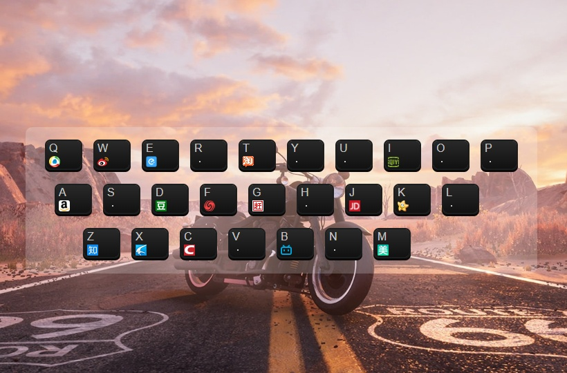

RS
card
关于
技能
作品
作品1
作品2
作品3
博客
作品1
作品2
作品3
日历
联系方式
其他
Hello
李明林
前端开发工程师
年龄
21
所在城市
宁波
学校
浙江万里学院
邮箱
soalin228@163.com
手机
17606874115
下载 PDF 简历
李明林，前端工程师
技能：前端开发，android开发
技能
HTML 5 & CSS 3
JavaScript
jQuery
微信小程序
Vue
React
ES6
Sass
作品集
